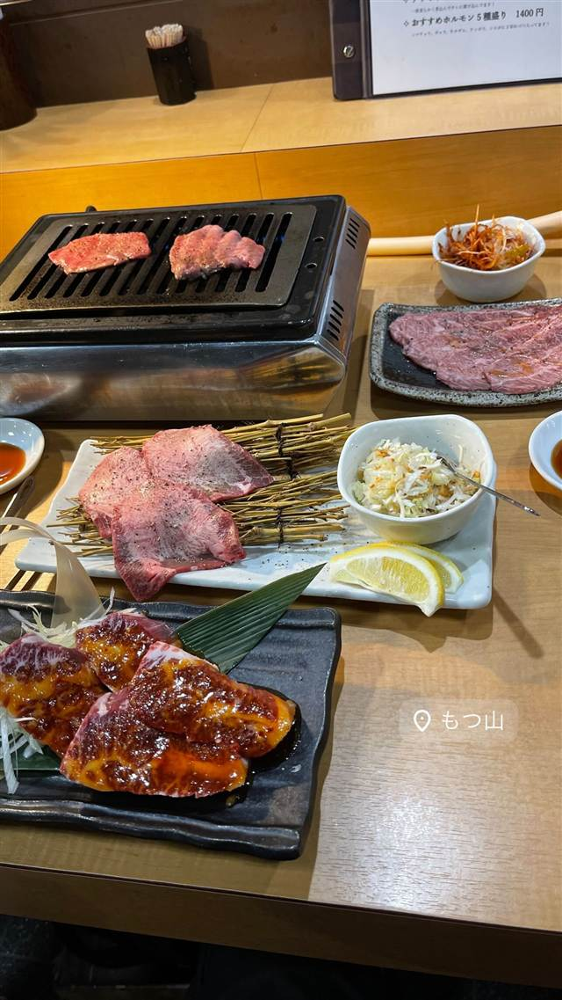
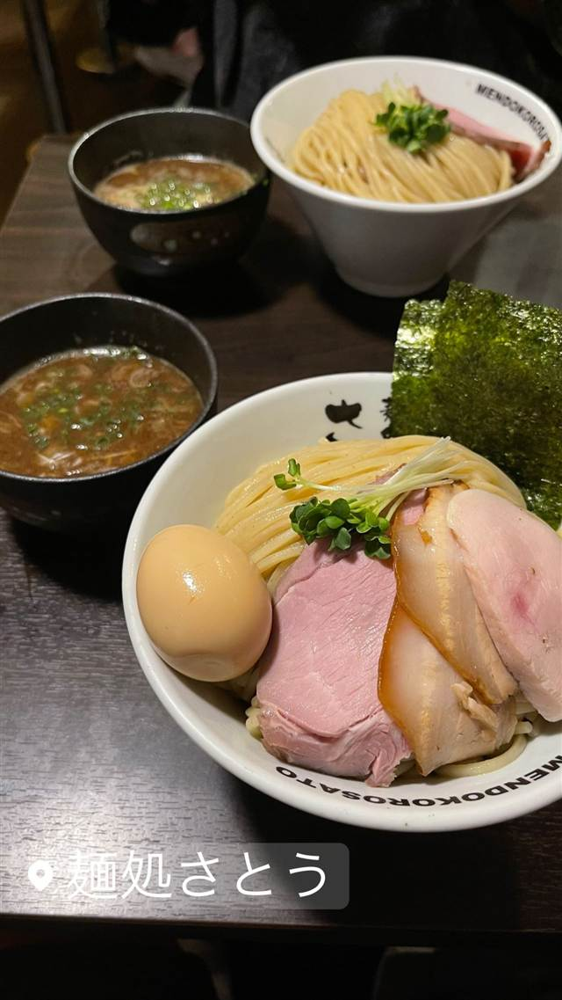
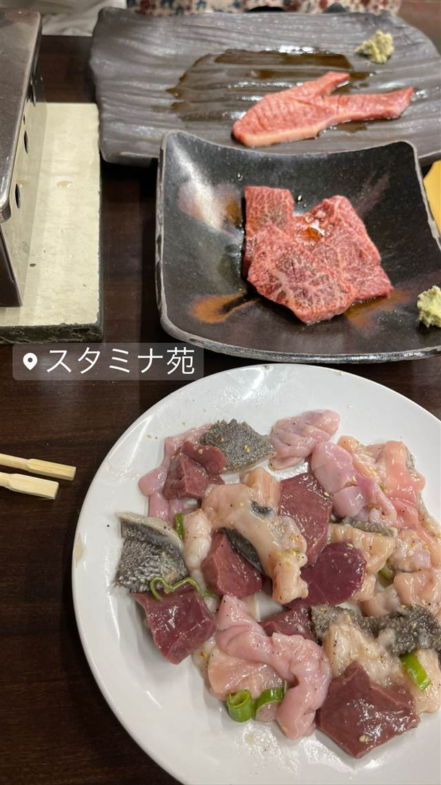
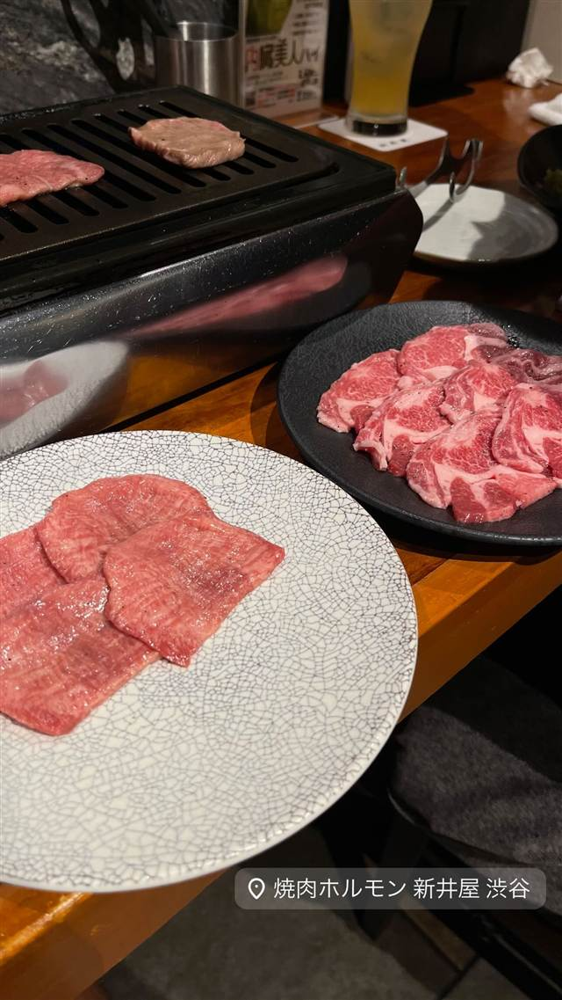
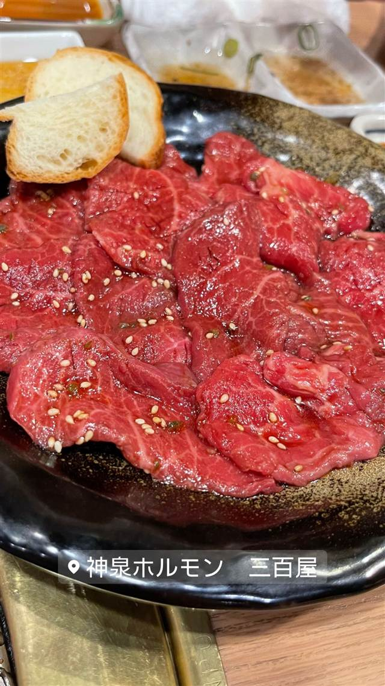

もつ山
用賀「ホドリ」の姉妹店、極厚カットの名物・神ハラミ
もつ山
桜新町のサザエさん通り沿いにあるホルモン専門店「もつ山」。用賀の人気焼肉店「ホドリ」の姉妹店で、芝浦・厚木から仕入れる新鮮なホルモンと、肉のプロが極厚にカットする名物「神ハラミ」が評判。
TRIVIA
豆知識
- 名物「神ハラミ」は肉のプロが極厚に切り出す一枚
- 用賀の人気焼肉店「ホドリ」の姉妹店として誕生した
- レモンたっぷりのレモンサワーや食後の温かいお茶など細やかな気配りがある
REVIEWS
世間の評判
3.39食べログ
神ハラミと山ロースの評判
- 神谷商店から仕入れる神ハラミの美味しさを絶賛する声が非常に多い
- 山ロースをご飯にのせて食べる組み合わせがとても良いという声が多い
- SNSなどでの事前の期待値が高すぎて実際とのギャップを感じる声もある
食べログ 口コミ120件
| 系譜 | 用賀の人気焼肉店「ホドリ」の姉妹店。 |
|---|---|
| 看板 | 神ハラミ（極厚カットのハラミ塩） |
| こだわり | 芝浦・厚木から直送する新鮮なホルモンを使用。肉のプロが極厚にカットするハラミが売り。 |
| どこから | 23区の外れ・近郊 |
| 営業時間 | 月 休み 火〜土 17:00-23:00 日 17:00-22:00 |
| 予算 | 夜 ¥2,000～¥2,999 |
| 場所 | 桜新町駅 東京都世田谷区桜新町1-15-22 イイダアネックス1F |
| メモ | 桜新町駅（サザエさん通り沿い）徒歩3分。1階は立ち飲み、2階はテーブル席。月〜土18:00〜25:00営業、日曜定休。 |
食べたもの：ホルモン焼肉
NEARBY
近い店・同じ系統の店
-
 コーヒー 桜新町駅
OGAWA COFFEE LABORATORY 桜新町
小川珈琲の新業態で楽しむコーヒーと炭火焼き料理のペアリング
昼 ¥1,000～¥1,999 夜 ¥3,000～¥3,999
コーヒー 桜新町駅
OGAWA COFFEE LABORATORY 桜新町
小川珈琲の新業態で楽しむコーヒーと炭火焼き料理のペアリング
昼 ¥1,000～¥1,999 夜 ¥3,000～¥3,999
-

つけ麺 桜新町駅 麺処さとう 桜新町店 名店「ほん田」出身の店主が作る魚介豚骨の濃厚つけ麺 昼 ～¥999 夜 ～¥999 -

ホルモン 西新井大師西 焼肉 スタミナ苑 ホルモン担当者が閉店後深夜からの仕込みを40年以上続け予約不可でも行列が絶えない 夜 ¥6,000～¥7,999 -
 ホルモン 田町駅（三田口）
ホルモンまさる
芝浦市場直送ホルモンを七輪で焼く焼肉百名店7年連続選出
昼 ～¥999 夜 ¥3,000～¥3,999
ホルモン 田町駅（三田口）
ホルモンまさる
芝浦市場直送ホルモンを七輪で焼く焼肉百名店7年連続選出
昼 ～¥999 夜 ¥3,000～¥3,999
-

ホルモン 神泉駅 焼肉ホルモン 新井屋 渋谷 高円寺発、下町仕込みの新鮮ホルモンと厚切りタン 夜 ¥6,000～¥7,999 -

ホルモン 神泉 神泉ホルモン 三百屋（サンビャクヤ） 元化粧品会社員が「闇市倶楽部」で修行した希少ホルモン25種 夜 ¥6,000～¥7,999